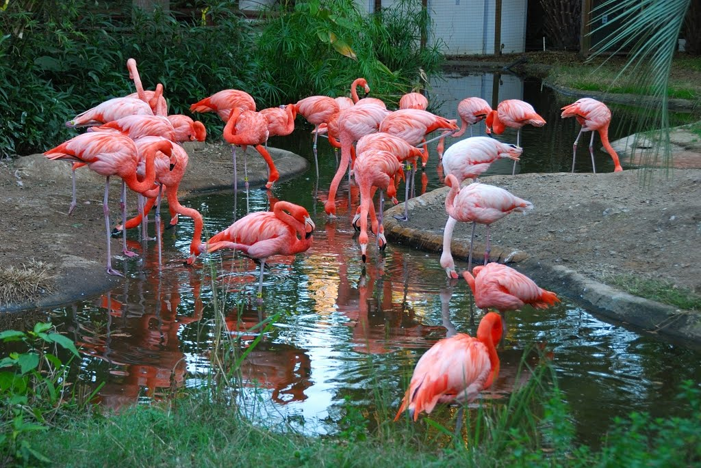

Around Columbia
The City of Columbia
Columbia is a city in Missouri, United States.It was Founded in 1820 as the county seat and home to the University of Missouri. As the second planned city in the United States, Columbia began to grow rapidly. Its population was nearing 1,000 shortly after the turn of the century.it had a 2015 estimated population of 119,108, and it is the principal city of the Columbia Metropolitan Area. As a midwestern college town, the city has a reputation for progressive politics, public art, and powerful journalism. Columbia is originally an agricultural town, the cultivation of the mind is Columbia's chief economic concern today. Never a major center of manufacturing, the city also depends on healthcare, insurance, and technology businesses.
We highly recommend to visit the Riverbanks Zoo & Garden during your stay in Columbia. Also if you love sports and outdoors, make sure you check the Columbia's Sports & Outdoors Website to find the our exciting outdoor programs.
Here is a list of exciting thing to do while you are staying in Columbia!